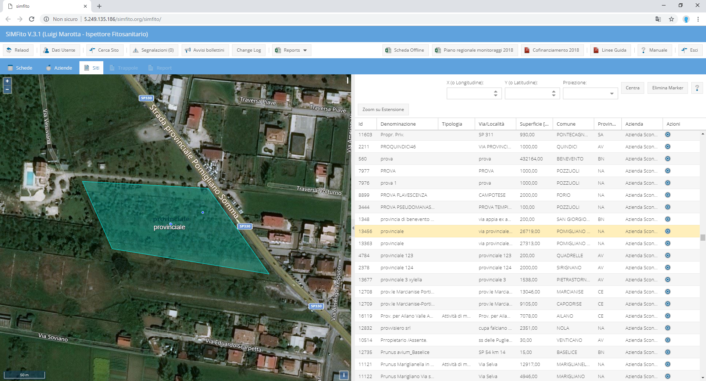
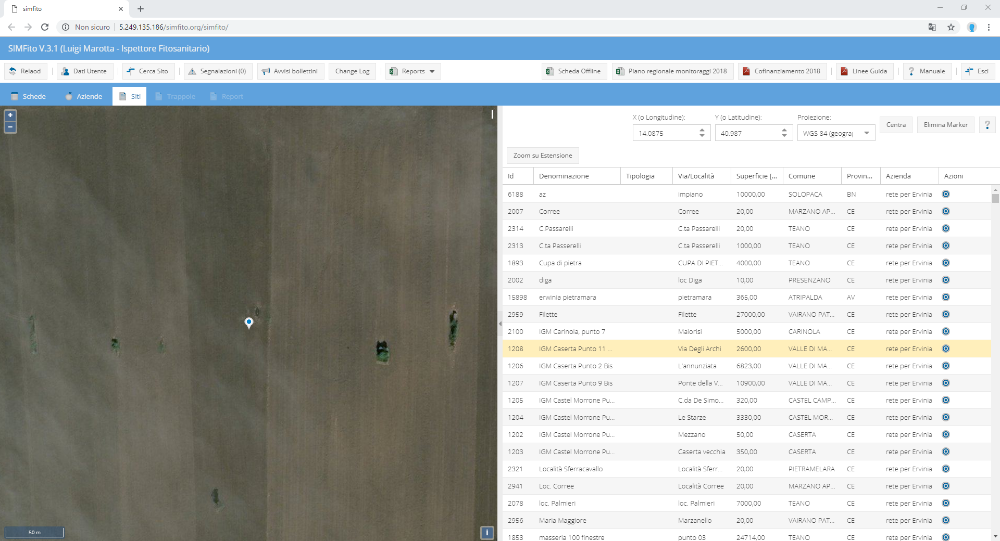
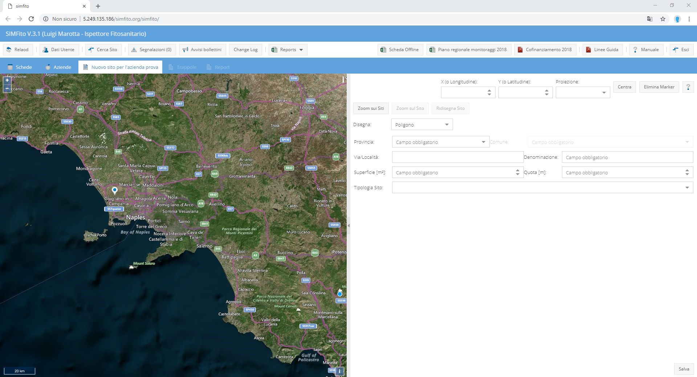
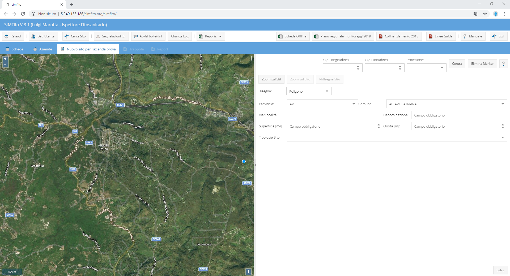
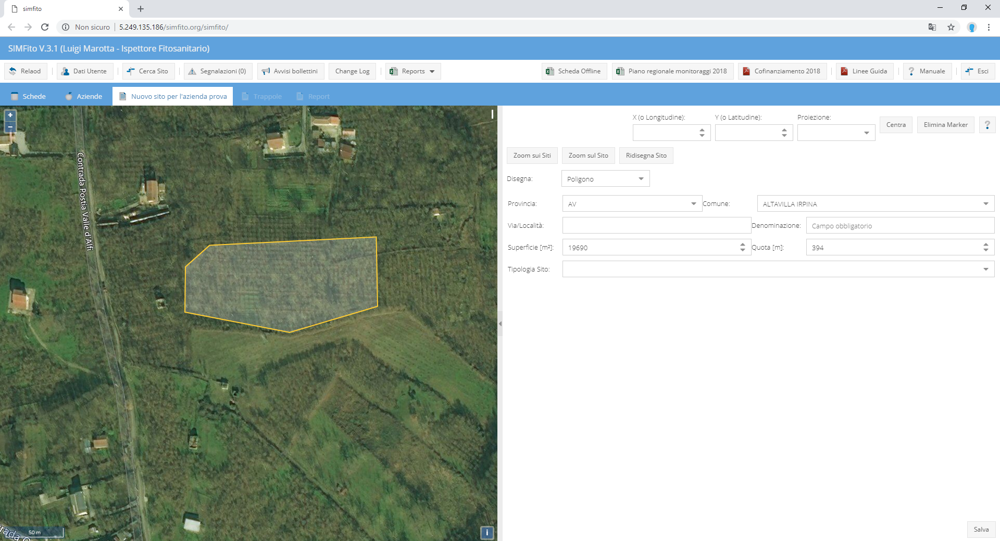

I sito sono i luoghi geografici in cui viene effettuata un'ispezione fitosanitaria. Essi sono associati ad un'azienda sia essa reale o sconosciuta.
Attraverso il pulsante Cerca Sito, nella toolbar principarle dell'applicazione, è possibile accedere al tab Siti che si presenta diviso in due aree:
Le colonne della lista possono essere filtrate e ordinate. Cliccando due volte su una riga, la riga si selezione (diventa di sfondo giallo), e la mappa zoomma sul sito corrispondente. Cliccando una volta su un sito, invece, si evidenzierà, sempre in giallo, la riga della tabella corrispondente.

Nella lista sono riportate le seguenti informazioni:
La ricerca del sito può essere effettuata anche utlizzando le coordinate. I sistemi di coordinate, al momento, disponibili sono:

La stessa situazione si presenta se si parte dall'icona mostra siti azienda della colonna delle azioni della lista delle aziende. In questo caso, però, sarranno mostrati solo i siti dell'azienda scelta.
Partendo dall'icona nuovo sito, della colonna delle azioni della lista delle aziende oppure del tasto Aggiungi sito del form di creazione di una nuova scheda, si accede al tab di disegno del sito per l'azienda selezionata. Questo tab è diviso in due aree come nel tab della ricerca del sito. La parte di sinistra in questo caso avrà, sotto, lo strumento di ricerca tramite coordinate, un form di inserimento della geometria e dei dati del sito.

Lo strumento di ricerca tramite coordinate ha, in questo caso, la funzione di ricercare un'area geografica di cui si conoscono le coordiante, appunto, magari perchè sono state rilevate tramite GPS. Un'altro strumento di ricerca è costituito dal campo Comune del from di inserimento dei dati del sito. Scegliendo provincia e comune, infatti, la mappa si centrerà nell'area del comune selezionato.

Quando si accede al tab il puntatore del mouse presenta una pallina blu. Individuata l'area del sito, è possibile disegnarlo cliccando una volta per ogni vertice da disegnare. Il poligono, che individuerà il sito può essere chiuso cliccando, di nuovo, sul primo vertice disegnato, oppure faccendo doppio click sull'ultimo. Una volta chiuso, il poligono diventa giallo ed è sempre possibile modificarlo (finchè non si compilano i campi del form e si salva), agendo sui lati o sui vertici

Disegnato il poligono vanno riempiti i campi del form degli attributi del sito. I campi richiesti sono:
Nella parte superiore del form è presente una tool bar che consente: